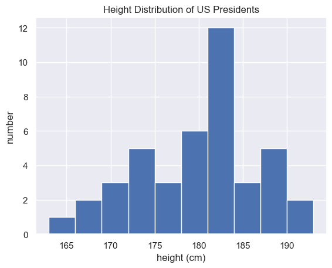

NumPy 扩展¶
1、python 导论¶
Numpy 是Python社区最重要的支持包之一，是处理多维数组的数值运算库，可以用于机器学习，图像处理、语言处理、数值计算等各种不同应用场景。虽然Numpy尚未成为python本身基础库。但已经成为Python多维数据处理的实质性标准。
Numpy目前由Numpy团队负责开发与维护，该项目成立于2005年。
Numpy版本目前更新状况可以通过下面的命令进行查询。
'1.26.4'
1.1 内置文档¶
使用Tab键可以在Ipython或者Jupyter Notebook中查看自动补全和各种函数的帮助文档。对于Numpy也是如此。显示Numpy命名空间中的内容，可以使用如下方法：
如果显示Numpy中的内置文档，可以直接使用下面方法:1.2 内置数据类型¶
我们需要花点时间去区分Numpy和Python的数据类型差异
2、创建数组¶
array([1, 4, 2, 5, 3])
dtype('int32')
Numpy 会根据输入的内容，默认ndarray的格式和数据类型
dtype('float64')
可以使用dtype关键字明确指定数据类型
array([1., 2., 3., 4.], dtype=float32)与Python不同，Numpy可以指定多维数组，下面是建立多维数组的示例。
array([[2, 3, 4],
[4, 5, 6],
[6, 7, 8]])
2.1 简单的数据创建方法¶
array([0, 0, 0, 0, 0, 0, 0, 0, 0, 0])
array([[1., 1., 1., 1., 1.],
[1., 1., 1., 1., 1.],
[1., 1., 1., 1., 1.]])
array([[3.14, 3.14, 3.14, 3.14, 3.14],
[3.14, 3.14, 3.14, 3.14, 3.14],
[3.14, 3.14, 3.14, 3.14, 3.14]])
array([ 0, 2, 4, 6, 8, 10, 12, 14, 16, 18])
array([0. , 0.25, 0.5 , 0.75, 1. ])
array([[0.39970806, 0.46597739, 0.0257459 ],
[0.05933404, 0.614792 , 0.5910225 ],
[0.76213103, 0.89892807, 0.43980076]])
array([[-0.37362824, 2.17639874, -0.69186425],
[ 0.42087952, 0.01164588, 0.60949926],
[-0.02950002, 0.18922248, -1.04251865]])
array([[4, 3, 8],
[3, 8, 4],
[6, 4, 0]])
array([[1., 0., 0.],
[0., 1., 0.],
[0., 0., 1.]])
# Create an uninitialized array of three integers
# The values will be whatever happens to already exist at that memory location
np.empty((3,3))
array([[1., 0., 0.],
[0., 1., 0.],
[0., 0., 1.]])
2.2 Numpy 的标准数据类型¶
标准的Numpy标准数据类型如下面表中所示。请注意，当构建一个数组时，你可以用一个字符串参数来指定数据类型，如：
也可以用一个Numpy对象来指定数据类型:| 数据类型 | 描述 |
|---|---|
bool_ |
布尔型 (True or False) 一个字节存储 |
int_ |
默认整型 (same as C long; normally either int64 or int32) |
intc |
与 C 语言中int 相同(normally int32 or int64) |
intp |
用作索引的整型 (与C语言中 ssize_t相同; 通常是int32 或者 int64) |
int8 |
字节 (-128 to 127) |
int16 |
整型 (-32768 to 32767) |
int32 |
整型 (-2147483648 to 2147483647) |
int64 |
整型 (-9223372036854775808 to 9223372036854775807) |
uint8 |
无符号整型 (0 to 255) |
uint16 |
无符号整型 (0 to 65535) |
uint32 |
无符号整型 (0 to 4294967295) |
uint64 |
无符号整型 (0 to 18446744073709551615) |
float_ |
float64简化形式. |
float16 |
半精度浮点型: sign bit, 5 bits exponent, 10 bits mantissa |
float32 |
单精度浮点型 float: sign bit, 8 bits exponent, 23 bits mantissa |
float64 |
双精度浮点型: sign bit, 11 bits exponent, 52 bits mantissa |
complex_ |
简写复数 complex128. |
complex64 |
复数, 2个32位浮点型 |
complex128 |
复数，2个64位浮点型 |
3、数组基础¶
3.1 Numpy数组属性¶
import numpy as np
np.random.seed(0) # seed for reproducibility
x1 = np.random.randint(10, size=6) # One-dimensional array
x2 = np.random.randint(10, size=(3, 4)) # Two-dimensional array
x3 = np.random.randint(10, size=(3, 4, 5)) # Three-dimensional array
每个数组都有ndim(数组维度)、shape(数组每个维度大小)、size(数组总大小)属性
x3 ndim: 3
x3 shape: (3, 4, 5)
x3 size: 60
另一个有用的属性是dtype,显示数组的数据类型，之前在标准类型中有介绍。
dtype: int32
其他属性包括数组元素大小的itemsize ，以及表示总数组字节大小的属性nbytes
itemsize: 4 bytes
nbytes: 240 bytes
3.2数组索引：获取单个元素¶
array([5, 0, 3, 3, 7, 9])
5
7
为了获取数组末尾索引，可以用负值做索引
9
7
在多维数组中，可以用逗号分隔的索引元组获得元素：
array([[3, 5, 2, 4],
[7, 6, 8, 8],
[1, 6, 7, 7]])
3
1
7
可以用上面的索引方式直接修改元素
array([[12, 5, 2, 4], [ 7, 6, 8, 8], [ 1, 6, 7, 7]])请注意，和Python不同，Numpy数组是固定类型的，这就意味着当你试图将一个浮点型值插入整数型数组时，浮点型将被截短成为整型，且该过程自动完成，没有提示和警告。
array([3, 0, 3, 3, 7, 9])
3.3 数组切片：获取子数组¶
切片的方法与Python中类似，使用冒号（：）来完成。基本格式是：
如果以上三个参数都没有指定，默认start=0 ,stop=维度大小，step=1
array([0, 1, 2, 3, 4, 5, 6, 7, 8, 9])
array([0, 1, 2, 3, 4])
array([5, 6, 7, 8, 9])
array([4, 5, 6])
array([0, 2, 4, 6, 8])
array([1, 3, 5, 7, 9])
一种常见的逆转数组的方法如下：
array([9, 8, 7, 6, 5, 4, 3, 2, 1, 0])
array([5, 3, 1])
多维子数组¶
多维切片也采用同样方法处理，用冒号（：）分割。如示例：
array([[12, 5, 2, 4],
[ 7, 6, 8, 8],
[ 1, 6, 7, 7]])
array([[12, 5, 2],
[ 7, 6, 8]])
array([[12, 2],
[ 7, 8],
[ 1, 7]])
子数组维度也可以同时被逆序：
array([[ 7, 7, 6, 1],
[ 8, 8, 6, 7],
[ 4, 2, 5, 12]])
获取数组的行和列¶
一种常见的处理是获取数组的单行和单列，可以将索引和切片结合起来：
[12 7 1]
[12 5 2 4]
获取行时，出于语法简洁，可以省略空的切片：
[12 5 2 4]
非副本视图的子序列¶
数组切片的一个特征是返回的是数组数据的视图，不是数值数据的副本，这样在视图上修改，整个数据也进行了修改。这一点是Numpy数组切片与Python列表切片的不同。
[[12 5 2 4]
[ 7 6 8 8]
[ 1 6 7 7]]
[[12 5]
[ 7 6]]
如果我们修改这个子数组，原始数据也被修改了。
[[99 5]
[ 7 6]]
[[99 5 2 4]
[ 7 6 8 8]
[ 1 6 7 7]]
Numpy 的这种特性很有用：意味着在处理非常大的数据集时，可以获取这些数据集的片段，不用复制底层的数据缓存。
创建数组的副本¶
如果我们需要使用副本方式，则可以使用COPY()方法予以解决：
[[99 5]
[ 7 6]]
[[42 5]
[ 7 6]]
[[99 5 2 4]
[ 7 6 8 8]
[ 1 6 7 7]]
3.4 数组的变形¶
使用reshape()函数，可以改变数组的形状。
[[1 2 3]
[4 5 6]
[7 8 9]]
该方法的前提是，原始数组的大小必须与变形的数组大小一致。如果满足该条件，reshape何以得到原数组的一个非副本视图。
另一个常见的变形模式：将一个一维数组变为二维数组的行或者列的矩阵。可以使用reshape（）方法，也可以在一个简单切片操作中利用newaxis关键字。
array([[1, 2, 3]])
array([[1, 2, 3]])
array([[1],
[2],
[3]])
3.5数组的拼接和分割¶
当数组需要合并和分割，需要使用相应的函数进行操作。
数组的拼接¶
拼接使用函数有：np.concatenate, np.vstack, and np.hstack
array([1, 2, 3, 3, 2, 1])
也可以一次拼接多个数组
[ 1 2 3 3 2 1 99 99 99]
对于二维数组，方法依然有效：
array([[1, 2, 3],
[4, 5, 6],
[1, 2, 3],
[4, 5, 6]])
array([[1, 2, 3, 1, 2, 3],
[4, 5, 6, 4, 5, 6]])
当矩阵维度固定时，可以使用np.vstack (垂直方向) and np.hstack (水平方向) 进行拼接。
array([[1, 2, 3],
[9, 8, 7],
[6, 5, 4]])
array([[ 9, 8, 7, 99],
[ 6, 5, 4, 99]])
数组的分割¶
数组分割与数组的拼接相反。使用的函数为： np.split, np.hsplit, 和 np.vsplit，在函数中传递一个索引列表作为参数，记录分裂点位置：
[1 2 3] [99 99] [3 2 1]
\(N\)个分裂点得到\(N+1\)个子数组。这种特征在np.hsplit, 和 np.vsplit用法中一样使用。
array([[ 0, 1, 2, 3],
[ 4, 5, 6, 7],
[ 8, 9, 10, 11],
[12, 13, 14, 15]])
[[0 1 2 3]
[4 5 6 7]]
[[ 8 9 10 11]
[12 13 14 15]]
[[ 0 1]
[ 4 5]
[ 8 9]
[12 13]]
[[ 2 3]
[ 6 7]
[10 11]
[14 15]]
Numpy还有np.dsplit可以在第三个维度分裂张量（三维数组），在此不在介绍与训练。
4、通用函数与计算¶
Numpy提供了一个简单优化的接口优化数组计算，其向量化操作在通用函数（ufunc）加持之下，大大提高效率。
4.1 Numpy的速度远远快于Python列表计算¶
import numpy as np
np.random.seed(0)
def compute_reciprocals(values):
output = np.empty(len(values))
for i in range(len(values)):
output[i] = 1.0 / values[i]
return output
values = np.random.randint(1, 10, size=5)
compute_reciprocals(values)
array([0.16666667, 1. , 0.25 , 0.25 , 0.125 ])
2.16 s ± 62 ms per loop (mean ± std. dev. of 7 runs, 1 loop each)
在基本的python编程下，需要几秒时间可以完成此操作。
4.2 通用函数UFuncs基本情况¶
向量操作与之前在Python中的数组操作完全不同。
[0.16666667 1. 0.25 0.25 0.125 ]
[0.16666667 1. 0.25 0.25 0.125 ]
计算较大数组运行时间
3.06 ms ± 216 μs per loop (mean ± std. dev. of 7 runs, 100 loops each)
仅仅使用一个除法，就比之前的函数编写快得多。
array([0. , 0.5 , 0.66666667, 0.75 , 0.8 ])
通用函数不仅仅只用于一维数组，更是可以用在多维计算上：
array([[ 1, 2, 4],
[ 8, 16, 32],
[ 64, 128, 256]], dtype=int32)
Computations using vectorization through ufuncs are nearly always more efficient than their counterpart implemented using Python loops, especially as the arrays grow in size. Any time you see such a loop in a Python script, you should consider whether it can be replaced with a vectorized expression.
4.3探索 NumPy通用函数¶
通用函数有两种形式，一元通用函数，对单个输入操作；二元通用函数，对两个输入操作。
数组算术用法¶
x = np.arange(4)
print("x =", x)
print("x + 5 =", x + 5)
print("x - 5 =", x - 5)
print("x * 2 =", x * 2)
print("x / 2 =", x / 2)
print("x // 2 =", x // 2) # floor division
x = [0 1 2 3]
x + 5 = [5 6 7 8]
x - 5 = [-5 -4 -3 -2]
x * 2 = [0 2 4 6]
x / 2 = [0. 0.5 1. 1.5]
x // 2 = [0 0 1 1]
求负值，求指数，求余数的算法
-x = [ 0 -1 -2 -3]
x ** 2 = [0 1 4 9]
x % 2 = [0 1 0 1]
需要在计算中关注四则运算的优先级。
array([-1. , -2.25, -4. , -6.25])
所有符号都时NumPy 的内置函数; 如 +号就是Numpy内置的add函数
array([2, 3, 4, 5])
NumPy中的算术运算符号:
| 运算符号 | 相应的通用函数 ufunc | 描述 |
|---|---|---|
+ |
np.add |
加法 (e.g., 1 + 1 = 2) |
- |
np.subtract |
减法 (e.g., 3 - 2 = 1) |
- |
np.negative |
负数 (e.g., -2) |
* |
np.multiply |
乘法 (e.g., 2 * 3 = 6) |
/ |
np.divide |
除法 (e.g., 3 / 2 = 1.5) |
// |
np.floor_divide |
除法向下取整 (e.g., 3 // 2 = 1) |
** |
np.power |
指数运算 (e.g., 2 ** 3 = 8) |
% |
np.mod |
模/余数 (e.g., 9 % 4 = 1) |
绝对值¶
array([2, 1, 0, 1, 2])
相应NumPy 通用函数是 np.absolute, 简写为 np.abs:
array([2, 1, 0, 1, 2])
array([2, 1, 0, 1, 2])
Numpy中的绝对值可以处理复数, 返回该复数的模:
array([5., 5., 2., 1.])
三角函数¶
print("theta = ", theta)
print("sin(theta) = ", np.sin(theta))
print("cos(theta) = ", np.cos(theta))
print("tan(theta) = ", np.tan(theta))
theta = [0. 1.57079633 3.14159265]
sin(theta) = [0.0000000e+00 1.0000000e+00 1.2246468e-16]
cos(theta) = [ 1.000000e+00 6.123234e-17 -1.000000e+00]
tan(theta) = [ 0.00000000e+00 1.63312394e+16 -1.22464680e-16]
逆三角函数如下：
x = [-1, 0, 1]
print("x = ", x)
print("arcsin(x) = ", np.arcsin(x))
print("arccos(x) = ", np.arccos(x))
print("arctan(x) = ", np.arctan(x))
x = [-1, 0, 1]
arcsin(x) = [-1.57079633 0. 1.57079633]
arccos(x) = [ 3.14159265 1.57079633 0. ]
arctan(x) = [-0.78539816 0. 0.78539816]
指数和对数¶
x = [1, 2, 3]
print("x =", x)
print("e^x =", np.exp(x))
print("2^x =", np.exp2(x))
print("3^x =", np.power(3, x))
x = [1, 2, 3]
e^x = [ 2.71828183 7.3890561 20.08553692]
2^x = [2. 4. 8.]
3^x = [ 3 9 27]
The inverse of the exponentials, the logarithms, are also available.
The basic np.log gives the natural logarithm; if you prefer to compute the base-2 logarithm or the base-10 logarithm, these are available as well:
x = [1, 2, 4, 10]
print("x =", x)
print("ln(x) =", np.log(x))
print("log2(x) =", np.log2(x))
print("log10(x) =", np.log10(x))
x = [1, 2, 4, 10]
ln(x) = [ 0. 0.69314718 1.38629436 2.30258509]
log2(x) = [ 0. 1. 2. 3.32192809]
log10(x) = [ 0. 0.30103 0.60205999 1. ]
还有一些函数对微小输入保持较高的精度，如np.expm1() 和 np.log1p
exp(x) - 1 = [0. 0.0010005 0.01005017 0.10517092]
log(1 + x) = [0. 0.0009995 0.00995033 0.09531018]
When x is very small, these functions give more precise values than if the raw np.log or np.exp were to be used.
一些特殊的通用函数¶
Numpy还有许多通用函数，包括双曲三角函数，比特位计算函数，比较运算符号，弧度转角度等等。另一个重要的通用函数是子模块scipy.special，在处理特殊情况，可以考虑。
# Gamma函数
x = [1, 5, 10]
print("gamma(x) =", special.gamma(x))
print("ln|gamma(x)| =", special.gammaln(x))
print("beta(x, 2) =", special.beta(x, 2))
gamma(x) = [1.0000e+00 2.4000e+01 3.6288e+05]
ln|gamma(x)| = [ 0. 3.17805383 12.80182748]
beta(x, 2) = [0.5 0.03333333 0.00909091]
# 误差函数 (高斯积分)
# 实现与逆向实现
x = np.array([0, 0.3, 0.7, 1.0])
print("erf(x) =", special.erf(x))
print("erfc(x) =", special.erfc(x))
print("erfinv(x) =", special.erfinv(x))
erf(x) = [ 0. 0.32862676 0.67780119 0.84270079]
erfc(x) = [ 1. 0.67137324 0.32219881 0.15729921]
erfinv(x) = [ 0. 0.27246271 0.73286908 inf]
5、聚合分析: Min, Max,与其他¶
基本统计需要计算均值、方差、中位数，最值的计算与分析。下面来看使用Numpy进行相关计算。
5.1 数组的值求和¶
Python本身有求和函数sum,可以实现求和。
48.75823563456798
这种语法与 NumPy's sum 函数很像, 在这个简单的例子中是一样的:
48.758235634567995
由于Numpy的sum函数在编译码中执行操作，计算速度更快。
96 ms ± 6.64 ms per loop (mean ± std. dev. of 7 runs, 10 loops each)
1.01 ms ± 37.8 μs per loop (mean ± std. dev. of 7 runs, 1,000 loops each)
请注意，Python中 sum 函数与Numpy中 np.sum 功能也是不同的，后面会有说明。
5.2 最小值与最大值¶
与Python中相似，Numpy中也有相应的最值函数：
(2.6322210999740747e-07, 0.9999969793097551)
NumPy相应的函数类似，但执行速度更快。
(2.6322210999740747e-07, 0.9999969793097551)
64.5 ms ± 2.97 ms per loop (mean ± std. dev. of 7 runs, 10 loops each)
455 μs ± 25.3 μs per loop (mean ± std. dev. of 7 runs, 1,000 loops each)
对于 min, max, sum, 一种直接的方法是直接调用ndarray的相应方法：
2.6322210999740747e-07 0.9999969793097551 500212.70110683894
多维度处理¶
[[0.17941645 0.70189096 0.0275724 0.25353604]
[0.37110081 0.28781232 0.56597207 0.40980885]
[0.81533201 0.04567107 0.08573185 0.98430074]]
默认情况下，聚合对整个数组起作用：
4.728145583458205
聚合更常用的是沿着多维数据不同的轴进行运算，如可以通过axis=0计算纵轴:
array([0.17941645, 0.04567107, 0.0275724 , 0.25353604])
该函数返回四个值，对应的是四个列，说明计算在纵向进行的。同样，对于横向计算的函数，需要如下计算：
array([0.70189096, 0.56597207, 0.98430074])
其他总体观察使用的聚合函数¶
NumPy 提供了很多聚合函数，但用法在此不细讨论。 但整个聚合函数列表如下：
| 函数名称 | 缺失值安全版本 | 描述 |
|---|---|---|
np.sum |
np.nansum |
计算元素的和 |
np.prod |
np.nanprod |
计算元素的积 |
np.mean |
np.nanmean |
计算元素的平均值 |
np.std |
np.nanstd |
计算元素的标准差 |
np.var |
np.nanvar |
计算元素的方差 |
np.min |
np.nanmin |
找出最小值 |
np.max |
np.nanmax |
找出最大值 |
np.argmin |
np.nanargmin |
找出最小值的索引 |
np.argmax |
np.nanargmax |
找出最小值的索引 |
np.median |
np.nanmedian |
计算元素的中位数 |
np.percentile |
np.nanpercentile |
计算元素的分位数值 |
np.any |
N/A | 验证任何一个元素为真 |
np.all |
N/A | 验证所有元素位真 |
5.3 例子: 美国总统身高是多少?¶
在data文件夹中一个CSV文件，描述了美国总统的身高数据。使用Numpy进行基本分析。
Aggregates available in NumPy can be extremely useful for summarizing a set of values. As a simple example, let's consider the heights of all US presidents. This data is available in the file president_heights.csv, which is a simple comma-separated list of labels and values:
import pandas as pd
data = pd.read_csv('data/president_heights.csv')
heights = np.array(data['height(cm)'])
print(heights)
[189 170 189 163 183 171 185 168 173 183 173 173 175 178 183 193 178 173
174 183 183 168 170 178 182 180 183 178 182 188 175 179 183 193 182 183
177 185 188 188 182 185]
一个简要的统计内容：
print("高度均值: ", heights.mean())
print("标准差:", heights.std())
print("最小高度: ", heights.min())
print("最大高度: ", heights.max())
高度均值: 179.73809523809524
标准差: 6.931843442745892
最小高度: 163
最大高度: 193
计算分位数：
print("25th percentile: ", np.percentile(heights, 25))
print("Median: ", np.median(heights))
print("75th percentile: ", np.percentile(heights, 75))
25th percentile: 174.25
Median: 182.0
75th percentile: 183.0
我们看到美国总统身高中位数位182厘米。为了更清晰看到直观结果，我们进行图形展示：
plt.hist(heights)
plt.title('Height Distribution of US Presidents')
plt.xlabel('height (cm)')
plt.ylabel('number');
